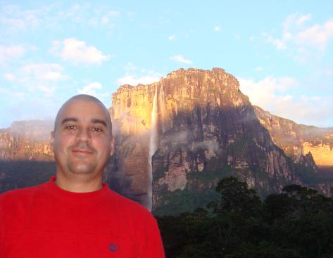

Santiago Segundo Guerrero Vivas
Professional profile
AWS Certified Cloud Practitioner (04-Dec-2020)University Technician in Computer Science, AWS Cloud Practitioner Certified 2020, with more than 30 years of experience in the area of Information Technology, I have had the opportunity to integrate different teams throughout my professional career, my current profile is as Devops/PAAS, for the Telefónica Movistar company in Argentina, I have traveled from support to PC users, programmer/development of Web application, Sys Admin Unix/Linux, AS400, SAP/BASIS, Gaining skills to collect, analyze and interpret the reality of the organization, on a platform of inventiveness, creativity and customer satisfaction.
Objetive
Access a job to contribute with the potential and background acquired throughout my academic training and previous professional experiences, in the achievement of the general goals of the company and be part of a work team that allows me to develop both professionally and personally.
Work experience
Telefónica (from: 08-2022 to: current)
DevOps - PAAS
Development and Support of CI-CD pipelines, application life cycle with solid knowledge in Openshift,
Gitlab, and other DevOps tools.
Certification Admin
Continuity in training system for the company Movistar (Telefónica), based on Linux, Oracle and CRM T3 (Weblogic), with migration to the cloud (Powercloud, Oracle Ravello).
Scripting, debugging logs, tracking the origins of failures reported by users, deployment of the cloud environment.
System Admin
Control of administrative activities, purchases and suppliers, administrative expenses, accounts payable and procedures before state agencies, payroll, recruitment and selection of personnel.
Selection, Purchase, Connectivity of computer equipment and Lutron lighting for automation of lights, configuration of WIFI networks.
SAP Basis Analyst (from: 01-2007 to: 03-2015)
Updating of the platform at the level of support packages, Daily monitoring of the SAP platform, Expansion of space in tablespace (Database), Creation and maintenance of Unix scripts, Review and intonation of Early Watch notices, user creation, maintenance of roles and user profiles SAP, Unix AIX Administration and RedHat.
Unix Administrator (from: 07-2003 to: 12-2006)Operational continuity of the Unix platform of PDVSA Metropolitan area of Caracas (approximately 230 servers), Migration of data from storage boxes, Stabilization, optimization and rationalization of resources. UNIX (AIX, Solaris, HP-UX, Linux Suse redhat debian and other distributions), storage configuration and management with Veritas Volume Manager, for Solaris servers, Backup configuration to BCV disks via scripts, Server virtualization with XEN and VirtualBox, SAP environment configuration with RedHat, MaxDB, Sap Netweaver 7.0 operating system
Programmer (from: 01-2000 to: 06-2003)Analysis, design and programming Visualbasic v6.0 of billing systems for PDVSA GAS, Operational continuity of applications for the billing of Liquefied Gas and Industrial Gas, under client-server platform, web environment, ORACLE SQL expertise
Education
(T.S.U) University Technician in Computer Science Graduated: November 30th of 1990 Venezuela University Institute of Technology Higher University Technician specialized in the application of computer procedures for the development and support of systems.
Languages
English (Intermediate), English Course-Venezuelan American Center (CVA) (2001/730 hours)
AWS Certified Cloud Practitioner (04-Dic-2020)
AZ-700 (Jan 2025)
Terraform 2024 (May 2024)
Microsoft Azure AZ900 (May 2024)
Kubernetes Administrator (CKA) (May 2024)
Python TOTAL - Programador (Nov 2023)
NodeJS: De cero a experto (Oct 2023)
Guía Completa de Docker (Aug 2023)
ArgoCD essential (May 2023)
Helm 3 (Apr 2023)
Hashicorp vault on Kubernetes cluster (Dec 2022)
HashiCorp Vault: The Advanced (Dec 2022)
Getting Started with HashiCorp Vault 2022 (Dec 2022)
DevOps Catalog, Patterns, And Blueprints (Aug 2022)
Gestión Continua de la Calidad del Software con SonarQube (Aug 2022)
Istio Service Mesh (Jul 2022)
Helm Kubernetes Packaging Manager for developers and Devops (Jul 2022)
Certified Kubernetes Security Specialist (Oct-2021)
Certified Kubernetes Application Developer CKAD (Sep-2021)
Scrum for beginners + Master certification (Aug 2021)
OpenShift for the absolute beginner (Aug 2021)
Aws Certified Developer Associate (Jul 2021)
Jenkins from Zero to Hero become devops (Jun 2021)
Ansible Advanced (May 2021)
Ansible for absolute beginner (May 2021)
Google Cloud Associate Engineer (May 2021)
Terraform Associate 2021 (Apr 2021)
Certified Kubernetes Administrator CKA (Apr-2021)
Kubernetes for the Absolute Beginners (Feb 2021)
GitLab pipelines CICD Devops for Beginners (Feb 2021)
Aws Certified SysOps Administrator Asociate (Jan 2021)
Aws Cloud practitioner, Udemy (2020)
Docker for the Absolute beginner, Udemy (2020)
Database administrator for junior dba Oracle, Udemy (2019)
SAP Basis Academy, Caracas, Venezuela (2006)
Basic Intermediate and Advanced Unix. AIX, HP-UX, Linux, Solaris (2003-2005)
Recent sporting achievements
XXVII International Crossing Swim rivers Orinoco - Caroní (2017)
Challenge route 23 from the mountains to the sea 4th Edition 650 Kms in 4 days Cycling (2023)